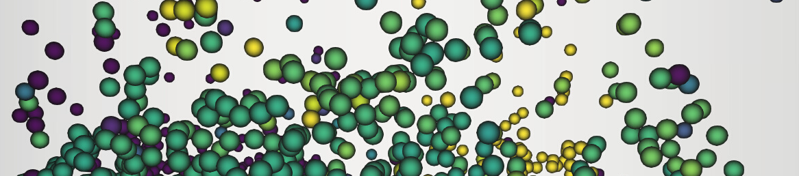

Warning
This documentation is a work in progress. It is reasonably complete and hopefully useful but is likely error prone and in places misleading. Please report any errors to the MFIX-Exa User Forum.
Welcome to MFIX-Exa’s documentation!
MFIX-Exa is a new multiphase computational fluid dynamics (CFD) modeling tool that can take advantage of massively parallel high performance computers (HPC) with the goal of scaling well at exascale. It combines the underlying physics from the existing MFIX code with the AMReX framework, creating the next generation, high performance, multiphase CFD workhorse.
MFIX-Exa is under active development as part of the MFIX-Exa application project in DOE’s Exascale Computing Project (ECP). All of MFIX-Exa’s development is done in the NETL gitlab repository, with active development in the develop branch. Changes are merged into the master branch at the beginning of each month.
When mature, this project will provide a modern multi-level multi-grid fluid solver with chemistry, heat transfer, complex geometry, and two particle models:
Discrete particle method (DEM) - Each particle is modeled as a sphere, resolving all particle collisions
Particle in cell method (PIC) - Particles are group in parcels and see other parcels through a stress gradient.
To get started with MFIX-Exa, follow the user guide sections:
To learn more about the implementation, follow the following reference sections:
The following section detail the testing and benchmarks used to ensure solutions and performance:
Tests and Benchmarks:
Notice
Neither the United States Government nor any agency thereof, nor any of their employees, makes any warranty, expressed or implied, or assumes any legal liability or responsibility for the accuracy, completeness, or usefulness of any information, apparatus, product, or process disclosed or represents that its use would not infringe privately owned rights.
MFIX-Exa is provided without any user support for applications in the user’s immediate organization. It should not be redistributed in whole or in part.
The use of MFIX-Exa is to be acknowledged in any published paper based on computations using this software by citing this MFIX-Exa site.
The authors would appreciate receiving any reports of bugs or other difficulties with the software, enhancements to the software, and accounts of practical applications of this software.